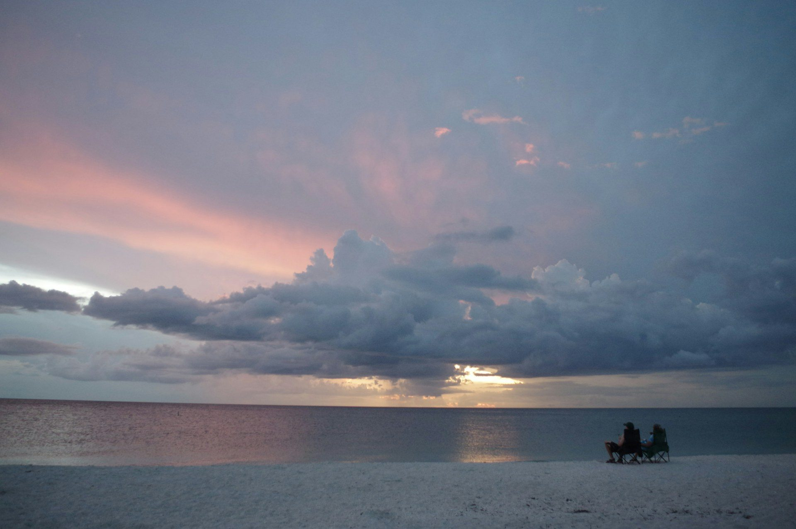
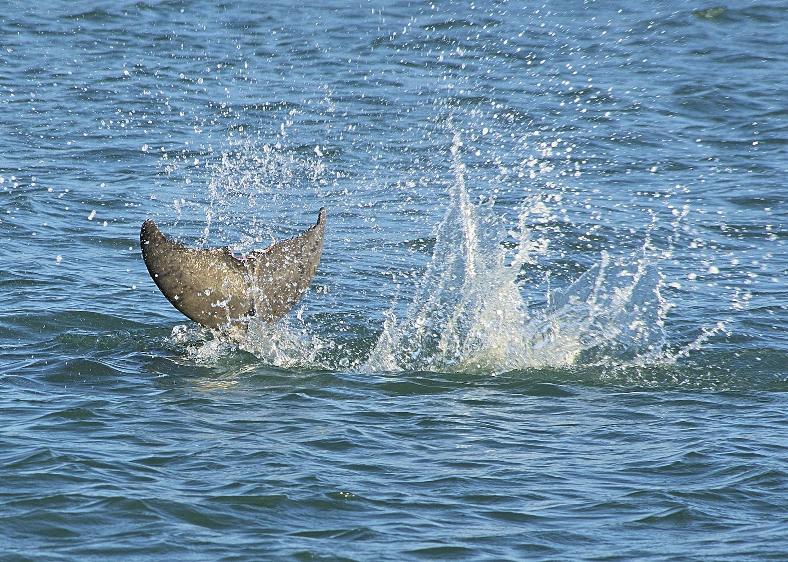

01

Nokomis Beach and Casey Key to the west, and Venice a short way south.
From the U.S. Census Bureau and Visit Sarasota.
Census place and beach
Nokomis is an unincorporated community in Sarasota County, so the county governs it. John Nolen, the planner of Venice, also planned Nokomis, and the National Park Service names it among the Florida towns he laid out in undeveloped areas.
The Census place covers the mainland around Nokomis Community Park and Nokomis Riverview Park. Nokomis Beach, North Jetty and Casey Key lie west of it, in unincorporated Sarasota County, and they carry a Nokomis mailing address.

West of the Census place
Sarasota County's oldest public beach, with lifeguards, a boardwalk, a canoe and kayak launch, a bayside boat ramp and dock, picnic shelters and a playground. visitsarasota.com
The Nokomis Beach Plaza was designed and built in the 1950s by Jack West and renovated in 2008. Visit Sarasota says it is on the National Register of Historic Places.
A narrow island with two ways on: Albee Road at the south end, near Venice, and Blackburn Point Road at the north, over a historic one-lane swing bridge.
At the end of Nokomis Beach, a spot for fishing from the rocks, with kayak and paddleboard rentals nearby.
An access point to the Legacy Trail, with a fishing pier and a kayak launch. Visit Sarasota
Homes for sale
01

02
Homes on the water, where the seawall and dock get a close look.
See listings

03

04
Listing information is provided in part by Stellar MLS through IDX Broker.
On the ground
Sarasota County School District
Sarasota County SchoolsPublic school inside the Census place
The district assigns schools by address, so the home you are looking at decides it: ask the Sarasota County School District.
From the Blog
Waterfront
Guides on insurance, flood zones, the roof and association rules.

Flood zones
A house near the water starts with its zone and its elevation; this shows how to look up both.

Inspections
What a 4-point inspection covers, from the roof to the systems an insurer asks about.
Questions

No. It is a Census designated place with no city government, so Sarasota County governs it.
At 100 Casey Key Road, Nokomis, FL 34275, west of the Census place.
Albee Road at the south end, near Venice, or Blackburn Point Road at the north, over a historic one-lane swing bridge.
Yes. The Legacy Trail passes through Nokomis, and Nokomis Community Park is an access point.
Christina starts with the seawall and the dock, then the flood zone. The zone and the elevation of the house both shape the insurance, and Sarasota Flood Zones shows how to look both up.
The Sarasota County School District assigns schools by address.
Nearby communities

Talk to Christina
Book a call and tell Christina which street you have in mind. On a waterfront house she checks the seawall, the dock and the flood zone before you tour.